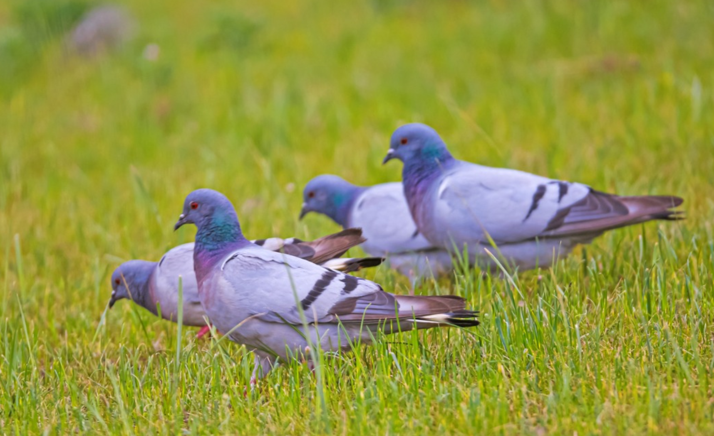
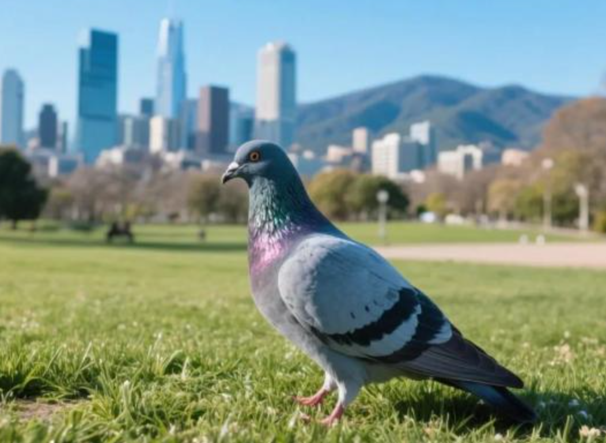
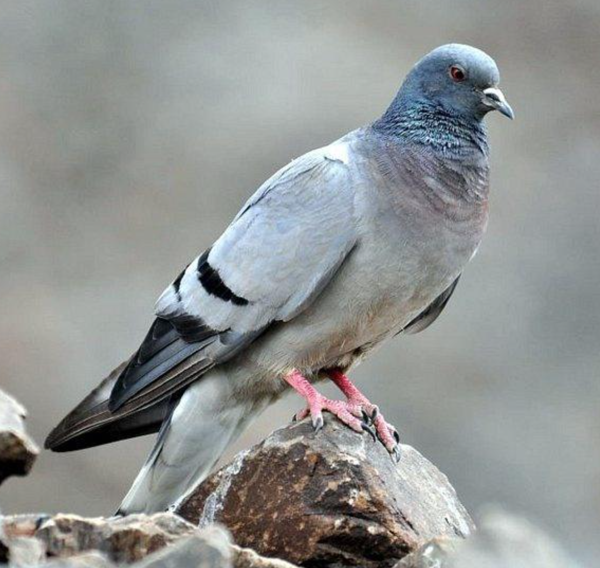
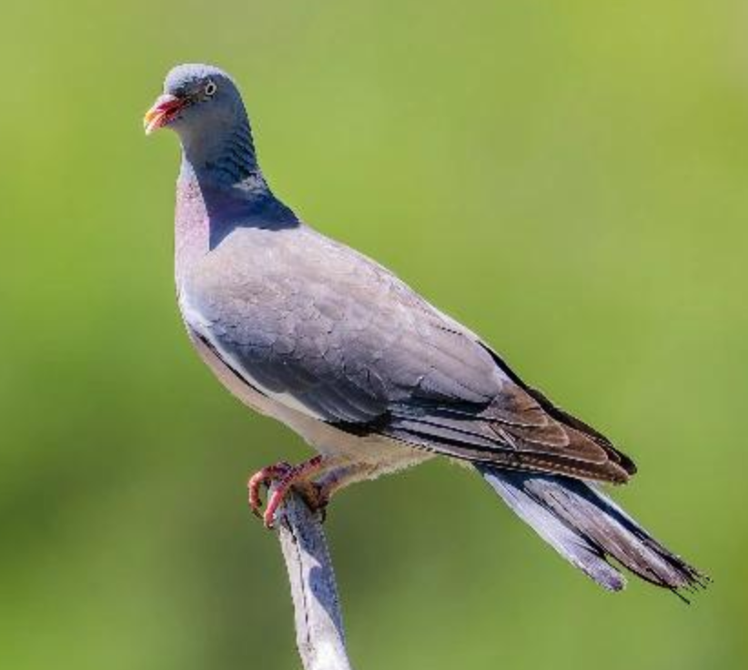
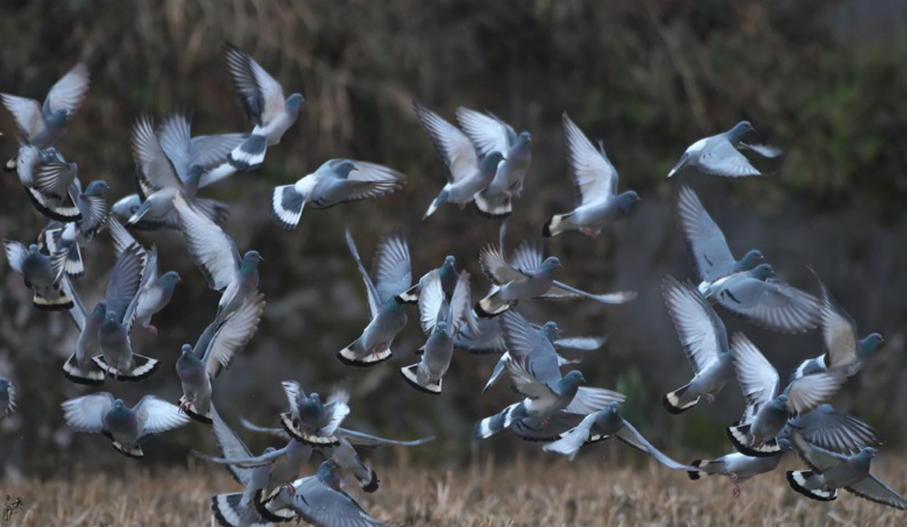

羽翼守望者


鸽属（Columba）隶属于鸠鸽科，全球约35种，分布于世界各地。体型中等（约30-40cm），羽毛以灰、蓝、白为主，颈部常有金属光泽。以谷物、种子为食，也吃植物嫩芽。原鸽是家鸽的野生祖先，已适应全球城市环境。
繁殖期营巢于悬崖、建筑或树上，巢由细枝搭建，结构简单。每窝产2枚卵。鸽群在城市中大量存在，依赖人类投喂。
📖 参考：点此处 查看国际鸟盟资料。

原鸽是家鸽的祖先，体长约30-35cm，羽毛蓝灰色，翼具两道黑色横斑，尾端黑色。全球广泛分布，尤其在城市广场和街道常见。
以谷物、种子为食，也吃人类丢弃的食物。繁殖期全年均可，每年产多窝，每窝2枚卵。群居性强，常成千上百只集群活动。

岩鸽体长约30-32cm，外形似原鸽，但尾部具白色横带，栖息于中国西部和北部的山地、悬崖和荒漠。
以谷物和草籽为食，繁殖期3-7月，营巢于岩缝中。在中国北方部分地区，岩鸽也会进入城市。

斑尾林鸽体长约38-42cm，上体灰褐色，颈部具白色斑块，翼上具白色横带。分布于欧洲和亚洲西部，在中国仅见于新疆西北部。
栖息于森林和林缘，以橡果、浆果和种子为食。繁殖期4-7月，每窝产2枚卵。
📖 参考：点此处 查看 IUCN 评估。

鸽属在城市生态中扮演种子传播和食物链环节角色，但过度投喂可能导致种群失衡。建议适量喂食、清理鸽粪、维护公共卫生。
📖 了解更多：点此处 查看中国林草局。